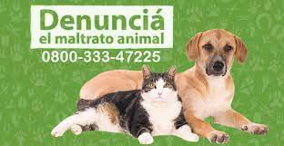

Animate a Denunciar
A ANIMALES: ¿QUÉ PUEDO HACER PARA DEFENDER SUS DERECHOS?
En los últimos tiempos, las redes sociales reflejan los malos tratos y actos de crueldad a los que son sometidos los animales. Allí también se manifiesta el repudio a estas brutales acciones y, en contraposición, el compromiso y solidaridad de las personas para erradicar el maltrato hacia los -popularmente conocidos- “sin voz”.
maltrato animal es un delito penado con prisión de 15 días a 1 año y puede ser denunciado por cualquier persona, mayor de 18 años. En Argentina, la Ley 14.346 protege a distintas especies de situaciones de violencia, estableciendo penas para las personas que maltraten o hagan víctimas de actos de crueldad a los animales.
¿Qué se considera maltrato animal?
- alimentarlos bien
- Estimularlos con instrumentos que les causan dolor, como el látigo
- Hacerlos trabajar muchas horas sin descanso.
- Hacerlos trabajar cuando no están en buen estado físico
- Estimularlos con drogas sin fines terapéuticos
- Usarlos para llevar vehículos muy pesados
La Ley establece como actos de crueldad hacia los animales, las siguientes acciones:
- Hacer cortes sobre el animal vivo para abrirlo y examinar su contenido (disección)
- Cortar cualquier parte del cuerpo del animal, salvo para marcación o higiene.
- Operar a animales sin anestesia y sin tener título de médico o veterinario, salvo caso de urgencia
- Hacer experimentos con animales
- Abandonar a los animales utilizados en experimentos
- Matar a animales en estado de embarazo
- Lastimar y atropellar animales intencionalmente, causarles torturas o sufrimientos innecesarios o matarlos por perversidad.
- Hacer actos públicos o privados de peleas de animales
- corridas de toros en que se mata, lastima o agrede a los animales
DÓNDE DENUNCIAR EN SAN LUIS
te enteras o sos testigo de un caso de maltrato o crueldad contra un animal podes denunciar, de manera presencial, en cualquier comisaría de la Provincia o en las Oficinas de Recepción de Denuncias del Poder Judicial de San Luis. Asimismo, se puede realizar por correo electrónico o por teléfono/whatsapp.
El trámite es totalmente gratuito. Es importante señalar que no es obligatorio presentar pruebas, pero si se necesita la ubicación donde se encuentra el animal y si fuera posible los datos de las personas que ejercen maltrato. En caso de contar con imágenes fotográficas o fílmicas, se pueden presentar al momento de realizar la denuncia.
Primera Circunscripción Judicial:
SAN LUIS: Rivadavia N° 340, segundo subsuelo. Correo electrónico: denunciassl@justiciasanluis.gov.ar. Teléfono: 2664610513.
Segunda Circunscripción Judicial:
MERCEDES: Lavalle extremo sur s/n, ala norte. Correo electrónico: denunciasvm@justiciasanluis.gov.ar. Teléfono: 2664881857.
Tercera Circunscripción Judicial:
CONCARÁN: 9 de Julio N° 128, edificio de la Cámara de Apelaciones. SANTA ROSA DEL CONLARA: Autopista de los Comechingones, frente a la Isla de Servicios, edificio Multifuero “Dr. Tomás Jofré”. MERLO: Av. Eva Duarte, esquina Neptuno, edificio Centro de Mediación y Juzgado de Paz. Correo electrónico: denunciasco@justiciasanluis.gov.ar. Teléfono: 2665024180.
Luego de que la Oficina de Recepción de Denuncias recibe la denuncia se formula un expediente, el cual pasa a la Fiscalía en turno y de allí se remite al Juzgado Correccional en turno para su tramitación. En esta última dependencia, se realizan una serie de medidas para verificar si se han vulnerado los derechos del animal, entre las cuales, se citan a las personas que realizaron la denuncia para ratificarla, pudiendo aportar mayor información a la causa.
¿Qué sucede luego del rescate de un animal?
Una vez rescatado el animal, se continúa investigando la causa para comprobar el delito, y el animal suele ponerse en depósito judicial provisorio. También se ofrecen asociaciones civiles sin fines de lucro o las caneras municipales para resguardarlo. Por lo general, antes de cerrar la causa se ofrece el animal a las asociaciones para su posterior adopción, pero puede suceder que, si se demuestra que no hubo delito, se entregue nuevamente a sus dueño/as.